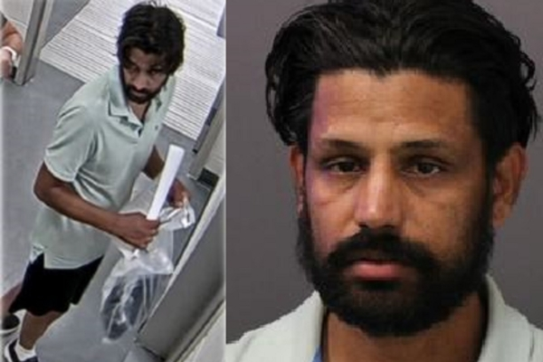

大多伦多约克区警方通辑劫车嫌犯，Giani Zail Singh，（SIDHU），39岁，身高5呎8吋（173厘米），体重150磅（68公斤），身材瘦削，黑色中长发，黑胡子。（约克区警方图片） 【2024年08月08日讯】（记者李平多伦多报导）上周六（8月3日），一名39岁男子在新市镇一个加油站抢劫车辆，目前被约克区警方通缉。警方透露，当天下午受害人在新市Mulock Drive East路夹Harry Walker Parkway路附近一个加油站加油时，嫌犯突然走近并上车，嫌犯正要开车逃走时，一名好心司机开车挡住去路，但嫌犯还是得手，倒车迅速逃之夭夭。过程中差点把受害者的车门撞掉。好在过程中无人受伤。
据了解，嫌疑作案前，刚刚出庭一个其它案子的保释听证会。当晚9时许，安省警方对卡利登镇（Caledon）一个交叉路口一起撞车逃逸事故出警，涉事车辆之一就是当天早些时候新市被劫车辆。嫌犯弃车徒步逃逸。警方虽出动无人机和警犬，仍未抓到嫌犯。目前警方已发出逮捕令。
嫌犯名叫辛格（Giani Zail Singh，SIDHU），39岁，无固定住址，身高5呎8吋（173厘米），体重150磅（68公斤），身材瘦削，黑色中长发，黑胡子，最后露面时身穿粉蓝色短袖Polo衫、黑色运动裤、海军蓝囚犯便鞋，戴白色或棕褐色渔夫帽。
嫌犯面临指控包括抢劫，危险操作交通工具，事故后逃逸，持5,000元以上犯罪所得财产，未遵守承诺等。
警方呼吁事故目击者出面作证，并希望有事发时间和路段视频监控或行车记录仪的民众与警方联系，呼吁知情人联系约克区警方抢劫组，电话 1-866-876-5423，分机6630，或拨打犯罪热线1-800-222-TIPS，或登陆www.1800222tips.com网站在线匿名举报。
责任编辑：文芳